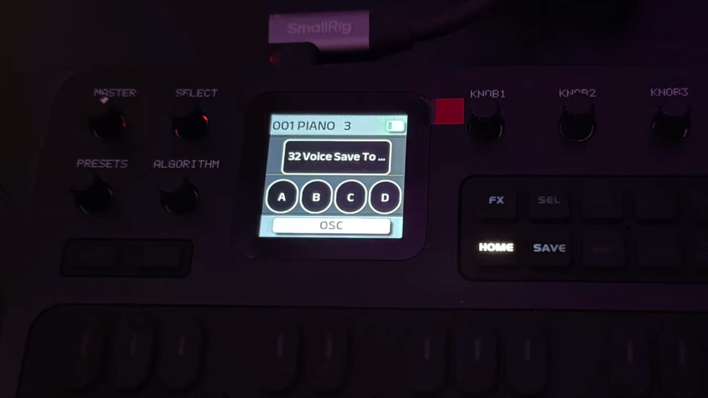

4. Voices: choose, save, manage
Presets, saving, init, rename, copy, SysEx import
128 voices in four banks
The FM-1 stores 128 voices, numbered 001–128, in four banks of 32:
| Bank | Voices | Factory content (V15) |
|---|---|---|
| A | 001–032 | Pianos, organs, synth leads, synth pads |
| B | 033–064 | Guitars, “DS” guitars, basses, synth basses |
| C | 065–096 | Brass, woodwinds, strings, voices |
| D | 097–128 | Percussion and effects (bells, gongs, drums…) |
Every slot is rewritable. The full factory list is on the reference page.
Choosing a voice
Turn PRESETS clockwise for the next voice, counter-clockwise for the previous one. It wraps from 128 to 001.
The voice loads instantly on every click, so play a few notes while you scroll. A list shows the number and name for about a second.
The top bar of every screen always shows the loaded number and name.
MIDI Program Change messages 0–127 also select voices 001–128.
With SEQ switched on, PRESETS does nothing. Each sequencer pattern is tied to a voice (page 8).
Edits are temporary until you save
When you edit a sound (EDIT, LFO, ENV, FX…), the change is held in a working copy. If you choose another voice before saving, your unsaved edits are lost. This is the number one surprise for new users.
Saving
Press and hold SAVE until the SAVE LED lights. Do not just tap it.
The screen shows
Preset Saved. Let go; the LED goes out.
SAVE writes all pending changes at once: the voice, its effect settings and ENV settings, sequencer patterns and global settings. It writes into the slot you are on. There is no “save as” step on this firmware; to keep the original and your variation, first copy the voice into another slot.
- Pick an empty-ish slot you don’t mind overwriting (or a bank you can restore).
- Copy a voice you like into it.
- Edit, listen, and hold SAVE when happy.
Init Voice (start from scratch)
Init Voice resets the current voice to a basic template, a good starting point for building a sound. It is on the second page of EDIT → GLO.
Press EDIT, then press the black key labelled GLO.
Turn SELECT clockwise to reach page 2 (
2/2).Turn KNOB 1 clockwise. All parameters of the voice are reset.
The manual says “all parameters will become a basic numerical value” without listing them. The DX7’s standard init voice is: algorithm 1, only operator 1 audible (Output level 99), all other operators at 0, ratio 1, flat envelopes, no feedback. The exercises in this guide assume that, but check on your own unit by playing a note after Init.
Rename
Voice names are up to 10 characters.
EDIT → GLO → page 2 (as above). Turn KNOB 2 clockwise to open the rename screen.
Choose the type of character with the first four operator keys (black keys):
Key Characters OP1 A–Z OP2 a–z OP3 symbols OP4 digits OP5 delete Turn KNOB 3 to pick the character.
Press SELECT (turn it) to confirm the character and move on. To cancel, turn KNOB 2 counter-clockwise.
Finish with a hold on SAVE to keep the new name.
The manual gives the keys and knobs above but not exactly how confirming works (it says “SELECT to confirm”). The V15 release note lists OP1 = A–Z, OP2 = a–z, OP3 = symbol, OP4 = number, OP5 = delete. The screen drawn here is a sketch of the idea.
Copy Voice
Copy Voice overwrites the voice you are on with another one, so it is how you duplicate a sound into a different slot.
First go to the destination slot with PRESETS.
EDIT → GLO → page 2. Turn KNOB 3 clockwise to open the voice picker.
Turn KNOB 4 to choose the source voice.
Use SELECT to confirm: the destination is overwritten. To leave without copying, turn KNOB 3 counter-clockwise.
Hold SAVE to make it permanent.
Reset Patches (restore a bank)
On the second GLO page (GLO button, not EDIT), Reset Patches restores one bank. Turn KNOB 1 clockwise to open it, turn knobs 1–4 to pick bank A, B, C or D, then turn SELECT clockwise to confirm (counter-clockwise cancels). The screen says Reset Success.
In V15 the bank is restored to the most recently imported voices. Until you import something, that is the factory set. After importing a bank, resetting restores your imported one, not the factory one.
Importing DX7 banks (SysEx)

Because the FM-1 uses the DX7 voice format, you can load classic DX7 sound banks (the 32-voice .syx files that exist in their thousands).
Connect the FM-1 to a computer or tablet by USB-C, Bluetooth, or the TRS MIDI input.
Send a standard DX7 32-voice bank dump from a MIDI utility (for example SysEx Librarian on Mac or MIDI-OX on Windows).
A bank selection screen appears on the FM-1. Turn any of KNOB 1–4 to choose A, B, C or D.
After a short delay the bank is written. The previous voices in that bank are overwritten.
- The factory bank files used by this tutorial’s research are standard DX7 dumps, so they work with any DX7 tool.
- Very large dumps over the TRS MIDI cable can need a small delay between packets; USB is the easiest route.
- Stock V15 cannot send voices back out (no export), so keep copies of banks you care about before overwriting them.
- DX7 data holds only the sound, not the FM-1 extras (effects, global ADSR). The effect and ENV settings are not part of a DX7 bank, so a bank import cannot carry them.
A single DX7 voice dump is reported to replace the current voice. Whether it is saved automatically or needs a hold on SAVE is not documented; hold SAVE to be safe.